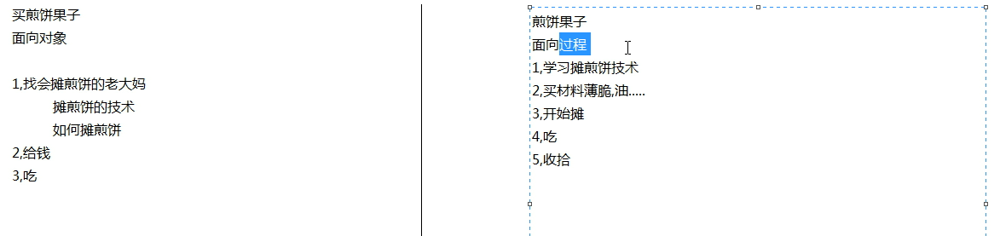
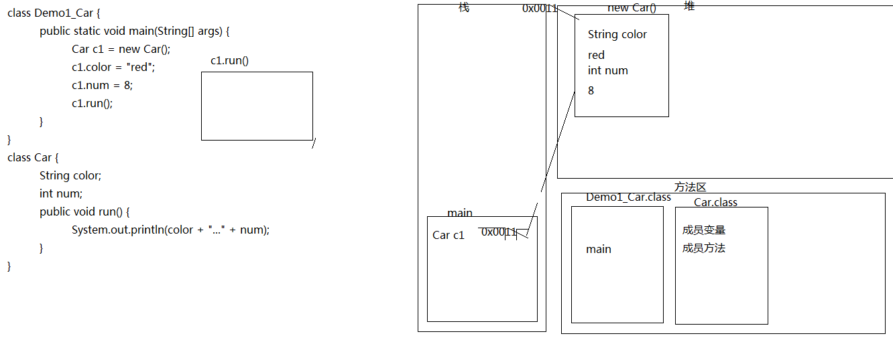
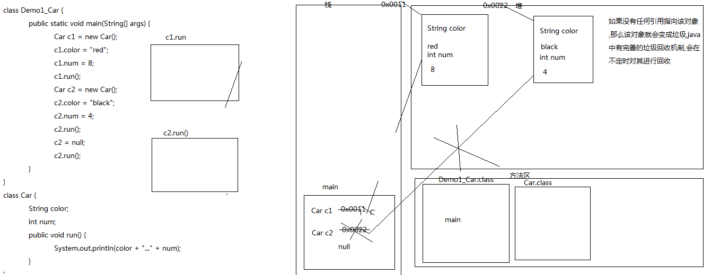
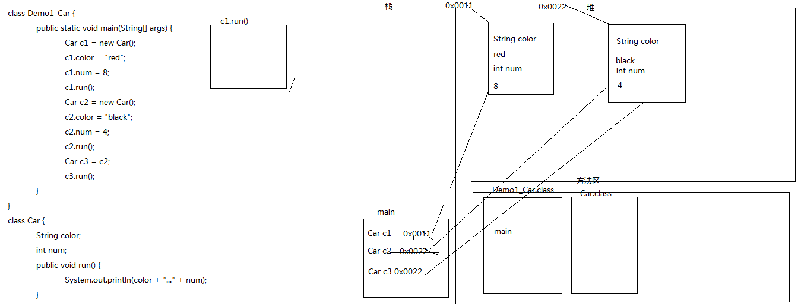
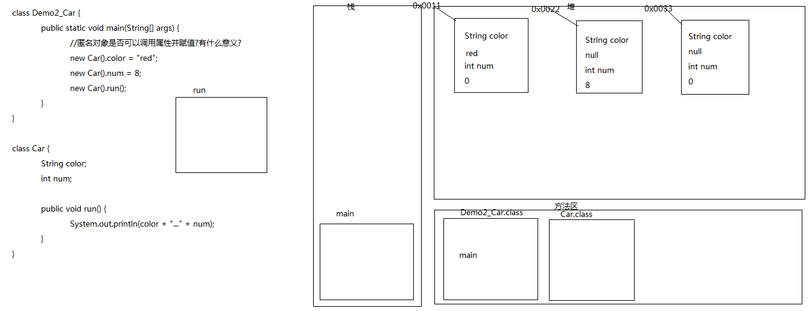

01_面向对象(面向对象思想概述)
|
* A:面向过程思想概述 |
|
面向过程与面向对象有哪些区别与联系？最好能举例说明 举例说明: 面向对象的思想特点有哪些？ * a:是一种更符合我们思想习惯的思想 面向对象的三大特征分别是什么？ * 封装(encapsulation) |
|  |
02_面向对象(类与对象概述)
|
* A:我们学习编程是为了什么 * 为了把我们日常生活中实物用学习语言描述出来 * B:我们如何描述现实世界事物 * 属性 就是该事物的描述信息(事物身上的名词) * 行为 就是该事物能够做什么(事物身上的动词) * C:Java中最基本的单位是类,Java中用class描述事物也是如此 * 成员变量 就是事物的属性 * 成员方法 就是事物的行为 * D:定义类其实就是定义类的成员(成员变量和成员方法) * a:成员变量 和以前定义变量是一样的，只不过位置发生了改变。在类中，方法外。 * b:成员方法 和以前定义方法是一样的，只不过把static去掉，后面在详细讲解static的作用。 * E:类和对象的概念 * a:类：是一组相关的属性和行为的集合 * b:对象：是该类事物的具体体现 * c:举例： * 类 学生 * 对象 具体的某个学生就是一个对象 |
|
什么是类，什么是对象？他们在生活中的体现分别是什么。 a:类：是一组相关的属性和行为的集合 b:对象：是该类事物的具体体现 什么是成员变量，什么是成员方法？ * a:成员变量 和以前定义变量是一样的，只不过位置发生了改变。在类中，方法外。 * b:成员方法 和以前定义方法是一样的，只不过把static去掉，后面在详细讲解static的作用。 |
03_面向对象(学生类的定义)
|
/* * A:案例演示 * 属性:姓名,年龄,性别 * 行为:学习,睡觉
* B:我们如何描述现实世界事物 * 属性 就是该事物的描述信息(事物身上的名词) * 行为 就是该事物能够做什么(事物身上的动词) * C:Java中最基本的单位是类,Java中用class描述事物也是如此 * 成员变量 就是事物的属性 * 成员方法 就是事物的行为 * D:定义类其实就是定义类的成员(成员变量和成员方法) * a:成员变量 和以前定义变量是一样的，只不过位置发生了改变。在类中，方法外。 * b:成员方法 和以前定义方法是一样的，只不过把static去掉，后面在详细讲解static的作用。 */
class Student { String name; //姓名 int age; //年龄 String gender; //性别
public void study() { //定义学习的方法 System.out.println("学生学习"); }
public void sleep() { //定义睡觉的方法 System.out.println("学生睡觉"); } } |
|
04_面向对象(手机类的定义)
|
/* * 模仿学生类，让学生自己完成 * 属性:品牌(brand)价格(price) * 行为:打电话(call),发信息(sendMessage)玩游戏(playGame)
*/ class Phone { String brand; //品牌 int price; //价格
public void call() { //打电话 System.out.println("打电话"); }
public void sendMessage() { //发信息 System.out.println("发信息"); }
public void playGame() { //玩游戏 System.out.println("玩游戏"); } } |
05_面向对象(学生类的使用)
|
class Demo1_Student { public static void main(String[] args) { //创建对象的格式:类名 对象名 = new 类名(); //对象名:其实就是合法的标识符,如果是一个单词所有字母小写,如果是多个单词,从第二个单词开始首字母大写 Student s = new Student(); //* D:如何使用成员变量呢? //* 对象名.变量名 s.name = "张三"; s.age = 23;
System.out.println(s.name + "..." + s.age); //* E:如何使用成员方法呢? //* 对象名.方法名(...) s.study(); s.sleep(); } }
/* * A:案例演示 * 属性:姓名,年龄,性别 * 行为:学习,睡觉
* B:我们如何描述现实世界事物 * 属性 就是该事物的描述信息(事物身上的名词) * 行为 就是该事物能够做什么(事物身上的动词) * C:Java中最基本的单位是类,Java中用class描述事物也是如此 * 成员变量 就是事物的属性 * 成员方法 就是事物的行为 * D:定义类其实就是定义类的成员(成员变量和成员方法) * a:成员变量 和以前定义变量是一样的，只不过位置发生了改变。在类中，方法外。 * b:成员方法 和以前定义方法是一样的，只不过把static去掉，后面在详细讲解static的作用。 */
class Student { String name; //姓名 int age; //年龄 String gender; //性别
public void study() { //定义学习的方法 System.out.println("学生学习"); }
public void sleep() { //定义睡觉的方法 System.out.println("学生睡觉"); } } |
|
06_面向对象(手机类的使用)
|
class Demo2_Phone { public static void main(String[] args) { //创建对象 Phone p = new Phone(); //调用对象中的属性并赋值 p.brand = "锤子"; p.price = 998;
System.out.println(p.brand + "..." + p.price);
//调用成员方法 p.call(); p.sendMessage(); p.playGame(); } }
/* * 模仿学生类，让学生自己完成 * 属性:品牌(brand)价格(price) * 行为:打电话(call),发信息(sendMessage)玩游戏(playGame)
*/ class Phone { String brand; //品牌 int price; //价格
public void call() { //打电话 System.out.println("打电话"); }
public void sendMessage() { //发信息 System.out.println("发信息"); }
public void playGame() { //玩游戏 System.out.println("玩游戏"); } } |
|
按照注释中的需求，编写出汽车类，创建对象并调用 汽车类（Car） 属性：车的颜色（color），车的轮胎个数（num） 行为：车会跑（run） |
07_面向对象(一个对象的内存图)
|
class Demo1_Car { public static void main(String[] args) { Car c1 = new Car(); //创建对象
//调用属性并赋值 c1.color = "red"; //为车的颜色赋值 c1.num = 8; //为车的轮胎数赋值
//调用行为 c1.run();
Car c2 = new Car(); //创建对象 c2.color = "black"; //为车的颜色赋值 c2.num = 4; //为车的轮胎数赋值 c2.run();
//c2 = null; //用null把原来的地址值覆盖掉了
//c2.run(); //c2里面记录的是null,所以报出空指针异常
Car c3 = c2; c3.run();
} } /* 车的属性 车的颜色 车的轮胎数 车的行为 车运行 */
class Car { //成员变量 String color; //车的颜色 int num; //车的轮胎数
public void run() { //车运行 System.out.println(color + "..." + num); } } |
|
 |
08_面向对象(二个对象的内存图)
|
class Demo1_Car { public static void main(String[] args) { Car c1 = new Car(); //创建对象
//调用属性并赋值 c1.color = "red"; //为车的颜色赋值 c1.num = 8; //为车的轮胎数赋值
//调用行为 c1.run();
Car c2 = new Car(); //创建对象 c2.color = "black"; //为车的颜色赋值 c2.num = 4; //为车的轮胎数赋值 c2.run();
//c2 = null; //用null把原来的地址值覆盖掉了
//c2.run(); //c2里面记录的是null,所以报出空指针异常
Car c3 = c2; c3.run();
} } /* 车的属性 车的颜色 车的轮胎数 车的行为 车运行 */
class Car { //成员变量 String color; //车的颜色 int num; //车的轮胎数
public void run() { //车运行 System.out.println(color + "..." + num); } } |
|
 |
09_面向对象(三个引用两个对象的内存图).
|
class Demo1_Car { public static void main(String[] args) { Car c1 = new Car(); //创建对象
//调用属性并赋值 c1.color = "red"; //为车的颜色赋值 c1.num = 8; //为车的轮胎数赋值
//调用行为 c1.run();
Car c2 = new Car(); //创建对象 c2.color = "black"; //为车的颜色赋值 c2.num = 4; //为车的轮胎数赋值 c2.run();
//c2 = null; //用null把原来的地址值覆盖掉了
//c2.run(); //c2里面记录的是null,所以报出空指针异常
Car c3 = c2; c3.run();
} } /* 车的属性 车的颜色 车的轮胎数 车的行为 车运行 */
class Car { //成员变量 String color; //车的颜色 int num; //车的轮胎数
public void run() { //车运行 System.out.println(color + "..." + num); } } |
|
 |
10_面向对象(成员变量和局部变量的区别)
|
* A:在类中的位置不同 * 成员变量：在类中方法外 * 局部变量：在方法定义中或者方法声明上 * B:在内存中的位置不同 * 成员变量：在堆内存(成员变量属于对象,对象进堆内存) * 局部变量：在栈内存(局部变量属于方法,方法进栈内存) * C:生命周期不同 * 成员变量：随着对象的创建而存在，随着对象的消失而消失 * 局部变量：随着方法的调用而存在，随着方法的调用完毕而消失 * D:初始化值不同 * 成员变量：有默认初始化值 * 局部变量：没有默认初始化值，必须定义，赋值，然后才能使用。
* 注意事项： * 局部变量名称可以和成员变量名称一样，在方法中使用的时候，采用的是就近原则。 * 基本数据类型变量包括哪些:byte,short,int,long,float,double,boolean,char * 引用数据类型变量包括哪些:数组,类,接口,枚举 |
|
class Demo2_Person { public static void main(String[] args) { Person p = new Person(); p.speak(); } } /* * A:在类中的位置不同 * 成员变量：在类中方法外 * 局部变量：在方法定义中或者方法声明上 * B:在内存中的位置不同 * 成员变量：在堆内存(成员变量属于对象,对象进堆内存) * 局部变量：在栈内存(局部变量属于方法,方法进栈内存) * C:生命周期不同 * 成员变量：随着对象的创建而存在，随着对象的消失而消失 * 局部变量：随着方法的调用而存在，随着方法的调用完毕而消失 * D:初始化值不同 * 成员变量：有默认初始化值 * 局部变量：没有默认初始化值，必须定义，赋值，然后才能使用。
* 注意事项： * 局部变量名称可以和成员变量名称一样，在方法中使用的时候，采用的是就近原则。 * 基本数据类型变量包括哪些:byte,short,int,long,float,double,boolean,char * 引用数据类型变量包括哪些:数组,类,接口,枚举 */ class Person { String name; //成员变量 int num;
public void speak() { int num = 10; //x和num都是局部变量 System.out.println(name);
System.out.println(num); } } |
|
成员变量与局部变量有什么区别？ 类的位置,内存位置,生命周期,初始化值 补充:调用方式不同,局部变量的调用,在方法内直接调用即可,成员变量的调用,需要使用对象.成员变量调用 在使用变量的过程中， 查找变量的顺序是什么？ 就近原则 |
11_面向对象(方法的形式参数是类名的时候如何调用) 重点
|
* A:方法的参数是类名public void print(Student s){}//print(new Student()); * 如果你看到了一个方法的形式参数是一个类类型(引用类型)，这里其实需要的是该类的对象。 |
|
class Demo1_Student { public static void main(String[] args) { print(10);
Student s = new Student(); //创建对象,并将对象的地址值赋值给s print(s); }
public static void print(int x) { //基本数据类型当作形式参数 System.out.println(x); }
public static void print(Student stu) { //引用数据类型当作形式参数 stu.name = "张三"; stu.age = 23; stu.speak(); } }
/* * A:方法的参数是类名public void print(Student s){}//print(new Student()); * 如果你看到了一个方法的形式参数是一个类类型(引用类型)，这里其实需要的是该类的对象。 */ class Student { String name; //姓名 int age; //年龄
public void speak() { System.out.println(name + "..." + age); } } |
|
如果你看到了一个方法的形式参数是一个类类型(引用类型)，这里其实需要的是该类的对象。 对比之前数组那章 |
12_面向对象(匿名对象的概述和应用)
|
* A:什么是匿名对象 * 没有名字的对象 * B:匿名对象应用场景 * a:调用方法，仅仅只调用一次的时候。 * 那么，这种匿名调用有什么好处吗? * 节省代码 * 注意：调用多次的时候，不适合。匿名对象调用完毕就是垃圾。可以被垃圾回收器回收。 * b:匿名对象可以作为实际参数传递 * C:案例演示 * 匿名对象应用场景 |
|
/* * A:什么是匿名对象 * 没有名字的对象 * B:匿名对象应用场景 * a:调用方法，仅仅只调用一次的时候。 * 那么，这种匿名调用有什么好处吗? * 节省代码 * 注意：调用多次的时候，不适合。匿名对象调用完毕就是垃圾。可以被垃圾回收器回收。 * b:匿名对象可以作为实际参数传递 * C:案例演示 * 匿名对象应用场景 */ class Demo2_Car { public static void main(String[] args) { /*Car c1 = new Car(); //创建有名字的对象 c1.run(); c1.run();
new Car().run(); //匿名对象调用方法 new Car().run(); */ //匿名对象只适合对方法的一次调用,因为调用多次就会产生多个对象,不如用有名字的对象
//匿名对象是否可以调用属性并赋值?有什么意义? /* 匿名对象可以调用属性,但是没有意义,因为调用后就变成垃圾 如果需要赋值还是用有名字对象 */ new Car().color = "red"; new Car().num = 8; new Car().run(); } }
class Car { String color; //颜色 int num; //轮胎数
public void run() { System.out.println(color + "..." + num); } } |
|
 |
|
class Demo3_Car { public static void main(String[] args) { //Car c1 = new Car(); /*c1.color = "red"; c1.num = 8; c1.run();*/ //method(c1);
method(new Car());
//Car c2 = new Car(); //method(c2); method(new Car()); //匿名对象可以当作参数传递 }
//抽取方法提高代码的复用性 public static void method(Car cc) { //Car cc = new Car(); cc.color = "red"; cc.num = 8; cc.run(); } }
class Car { String color; //颜色 int num; //轮胎数
public void run() { System.out.println(color + "..." + num); } } |
|
什么是匿名对象，有什么特点？ 没有名字的对象 什么时候可以使用匿名对象？ * a:调用方法，仅仅只调用一次的时候。 * 那么，这种匿名调用有什么好处吗? * 节省代码 * 注意：调用多次的时候，不适合。匿名对象调用完毕就是垃圾。可以被垃圾回收器回收。 * b:匿名对象可以作为实际参数传递 |
13_面向对象(封装的概述)
|
* A:封装概述 * 是指隐藏对象的属性和实现细节，仅对外提供公共访问方式。
* B:封装好处 * 隐藏实现细节，提供公共的访问方式 * 提高了代码的复用性 * 提高安全性。 * C:封装原则 * 将不需要对外提供的内容都隐藏起来。 * 把属性隐藏，提供公共方法对其访问。 |
|
14_面向对象(private关键字的概述和特点)
|
* A:人类赋值年龄的问题 * B:private关键字特点 * a:是一个权限修饰符 * b:可以修饰成员变量和成员方法 * c:被其修饰的成员只能在本类中被访问 * C:案例演示 * 封装和private的应用： * A:把成员变量用private修饰 * B:提供对应的getXxx()和setXxx()方法 * private仅仅是封装的一种体现形式,不能说封装就是私有 |
|
/* * A:人类赋值年龄的问题 * B:private关键字特点 * a:是一个权限修饰符 * b:可以修饰成员变量和成员方法 * c:被其修饰的成员只能在本类中被访问 * C:案例演示 * 封装和private的应用： * A:把成员变量用private修饰 * B:提供对应的getXxx()和setXxx()方法 * private仅仅是封装的一种体现形式,不能说封装就是私有 */ class Demo1_Person { public static void main(String[] args) { Person p1 = new Person(); p1.name = "张三"; //调用姓名属性并赋值 //p1.age = -17; //调用年龄属性并赋值 //p1.speak(); //调用行为
p1.setAge(-17);
System.out.println(p1.getAge()); } }
class Person { String name; //姓名 private int age; //年龄
public void setAge(int a) { //设置年龄 if (a > 0 && a < 200) { age = a; }else { System.out.println("请回火星吧,地球不适合你"); }
}
public int getAge() { //获取年龄 return age; }
public void speak() { System.out.println(name + "..." + age); } } |
|
被private修饰的成员有什么特点？ * a:是一个权限修饰符 * b:可以修饰成员变量和成员方法 * c:被其修饰的成员只能在本类中被访问 封装指的就是private，这句话对吗？ * private仅仅是封装的一种体现形式,不能说封装就是私有 (思考题)getter/setter方法一定要成对出现吗？ |
15_面向对象(this关键字的概述和应用)
|
/* * A:this关键字特点 * 代表当前对象的引用 * B:案例演示 * this的应用场景 * 用来区分成员变量和局部变量重名 */ class Demo1_This { public static void main(String[] args) { Person p1 = new Person(); p1.setName("张三"); p1.setAge(23); System.out.println(p1.getName() + "..." + p1.getAge());
Person p2 = new Person(); p2.setName("李四"); p2.setAge(24); System.out.println(p2.getName() + "..." + p2.getAge()); } }
class Person { private String name; //姓名 private int age; //年龄
public void setAge(int age) { //设置年龄 if (age > 0 && age < 200) { this.age = age; //System.out.println(age); }else { System.out.println("请回火星吧,地球不适合你"); }
}
public int getAge() { //获取年龄 return age; }
public void setName(String name) { //设置姓名 this.name = name; //System.out.println(name); }
public String getName() { return name; } } |
|
this关键字是什么？用途是什么？ 代表当前对象的引用, *用来区分成员变量和局部变量重名 查看注释中代码，完成代码后要求 查看注释中需求，完成代码 |
16_面向对象(手机类代码及其测试)
|
* A:学生练习 class Demo2_Phone { public static void main(String[] args) { Phone p1 = new Phone(); p1.setBrand("三星"); p1.setPrice(5288);
System.out.println(p1.getBrand() + "..." + p1.getPrice()); p1.call(); p1.sendMessage(); p1.playGame(); } } /* 手机类 属性:品牌brand,价格price 行为:打电话call,发短信sendMessage,玩游戏,playGame */ class Phone { //java bean private String brand; //品牌 private int price; //价格
public void setBrand(String brand) { //设置品牌 this.brand = brand; }
public String getBrand() { //获取品牌 return this.brand; //this.可以省略,你不加系统会默认给你加 }
public void setPrice(int price) { //设置价格 this.price = price; }
public int getPrice() { //获取价格 return price; }
public void call() { //打电话 System.out.println("打电话"); }
public void sendMessage() { //发短信 System.out.println("发短信"); }
public void playGame() { //玩游戏 System.out.println("玩游戏"); } } |
=========作业
1:局部变量和成员变量的区别?
类中位置, 局部变量:方法中,方法声明上
class HelloWorld {
String name;
public void run(String name){
int age =10;
}
}
内存位置: 局部变量 栈内存 成员变量 堆内存
生命周期: 局部变量,随着方法的调用而进栈,随着方法的弹栈而消失
成员变量 随着对象的创建而存在,随着对象的消失而消失
默认初始值:局部变量没有默认初始值
成员变量有默认初始值
引用数据类型:null
基本数据类型: 整数型 int short byte long 0
小数类型 float double 0.0
布尔类型: false
字符型:char '\u0000'
2:匿名对象是什么?应用场景是什么?
没有名字的对象
Student s = new Student();
new Student();
匿名对象两种应用场景:
第一种:仅仅调用一次方法的时候可以使用
第二种:可以作为参数传递
class Test {
public static void main(String[] args){
//第一种
Student s = new Student();
show(s);
//第二种
show(new Student());
}
//如果一个方法的形式参数是类名的时候,这里其实要的该类的对象
public static void show(Student s){
System.out.println("show方法");
}
}
作为参数传递
add(new Student());
//这是一个类方法,这个类的书写格式是 : 修饰符 返回值类型 方法名(参数类型 参数名1 ,参数类型 参数名2) {}
public void add(Student s){
}
3:封装是什么?java中封装的体现有哪些?请举例说明。
封装事物隐藏实现细节,对外提供公共访问方式
private 成员变量 //不能在外部类中 用对象名.成员变量来赋值 必须通过set/get方法来操作
对外提供 set/get方法
4:this关键字是什么?this关键字的应用场景?
指向当前对象,当前的引用
"我"
class Test {
public static void main(String[] args) {
Student s = new Student();
s.setName("张三");
Student s2 = new Student();
s2.setName("李四");
}
}
class Student {
private String name;
private int age;
public void setName(String name) {
//就近原则 作用之一:区分局部变量 和成员变量
this.name = name;
}
}
5:如何使用一个类的成员
如果一个类里面的成员变量没有使用private关键字,那么
使用对象名.成员变量名即可
如果一个类里面的成员方法没有使用private关键字,那么
使用对象名.成员方法名()调用即可
class Test {
public static void main(String[] args) {
Student s = new Student();
s.name = "张三";
s.setName("张三");
s.run();
Student s2 = new Student();
s2.setName("李四");
}
}
class Student {
String name;
private int age;
public void setName(String name) {
//就近原则 作用之一:区分局部变量 和成员变量
this.name = name;
}
private void run(){
}
}
ending...